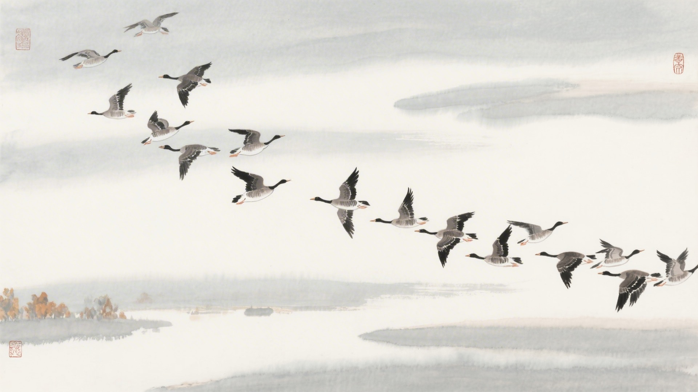
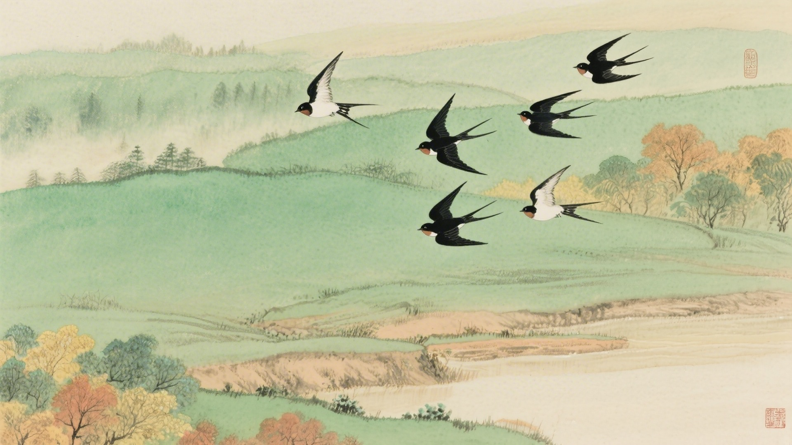
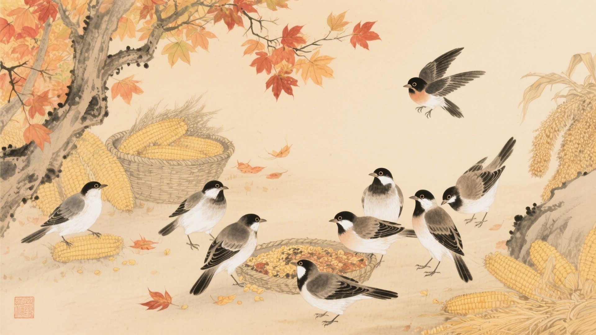
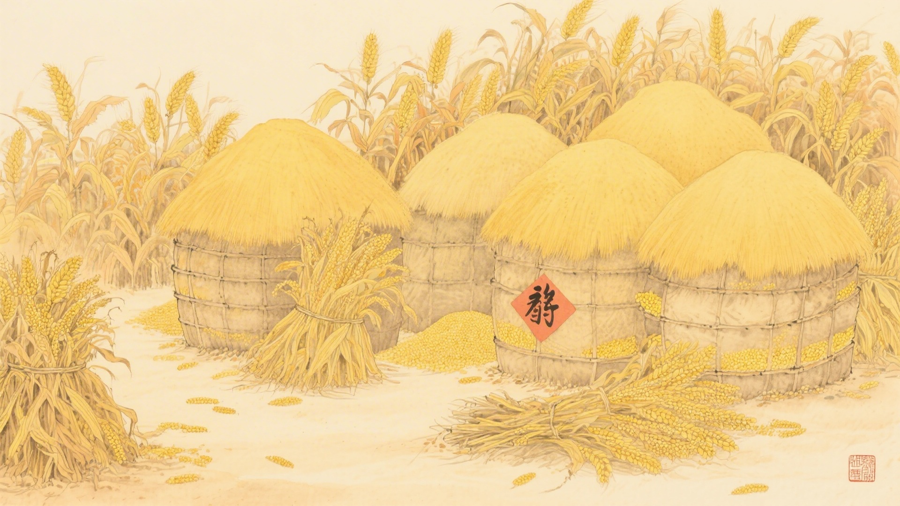
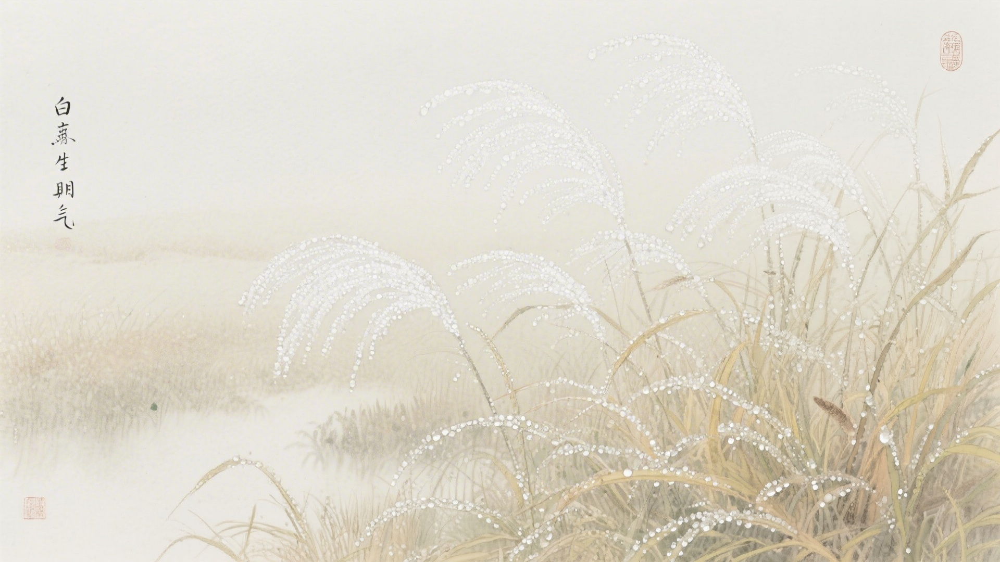

《中国传统色：故宫里的色彩美学》一书中为什么把下面这些颜色归入白露节气？
凝脂、玉色、黄润、缣缃
蕉月、千山翠、结绿、绿云
藕丝秋半、苍烟落照、红藤杖、紫鼠
黄粱、蒸栗、射干、油葫芦
白露时节，鸿雁飞来，燕子南归，鸟儿开始储粮。古人说白露有三候：鸿雁来，玄鸟归，群鸟养羞。这十六种颜色，便从这三候里来。
白露的"白"，是露水的颜色。夜里的水汽凝结成露，白茫茫的，早晨起来，草叶上都是小水珠。颜色也带着露水气，清淡、温润、透亮。
对应：白露节气一候"鸿雁来"的起、承、转、合四色。
色彩意象：鸿雁南飞，秋意渐浓。
从素白到淡黄，是鸿雁飞过的色彩变化，也是白露时节最干净的底色。

对应：白露节气二候"玄鸟归"的起、承、转、合四色。
色彩意象：燕子归去，绿意犹存。
从青绿到翠绿，是燕子离去前的最后生机，也是白露时节最清新的色彩。

对应：白露节气三候"群鸟养羞"的起、承、转、合四色（其一）。
色彩意象：鸟儿储粮，秋色斑斓。
从淡粉到灰紫，是鸟儿储粮的色彩变化，也是白露时节最丰富的层次。

对应：白露节气三候"群鸟养羞"的起、承、转、合四色（其二）。
色彩意象：秋粮入库，金黄遍地。
从淡黄到褐色，是秋粮入库的色彩变化，也是白露时节最温暖的画面。

白露这天，早晨起来看草地，白茫茫一片。太阳一出来，露水就没了，像是梦醒了。颜色也带着梦气，淡的、柔的、朦胧的，像是还没完全醒过来。

颜色也懂得温柔。它们不再像夏天那么热烈，不再那么张扬。红的变淡了，绿的变黄了，白的更白了。像是老了，看淡了，不那么争了。
（以上解读不代表原书观点）